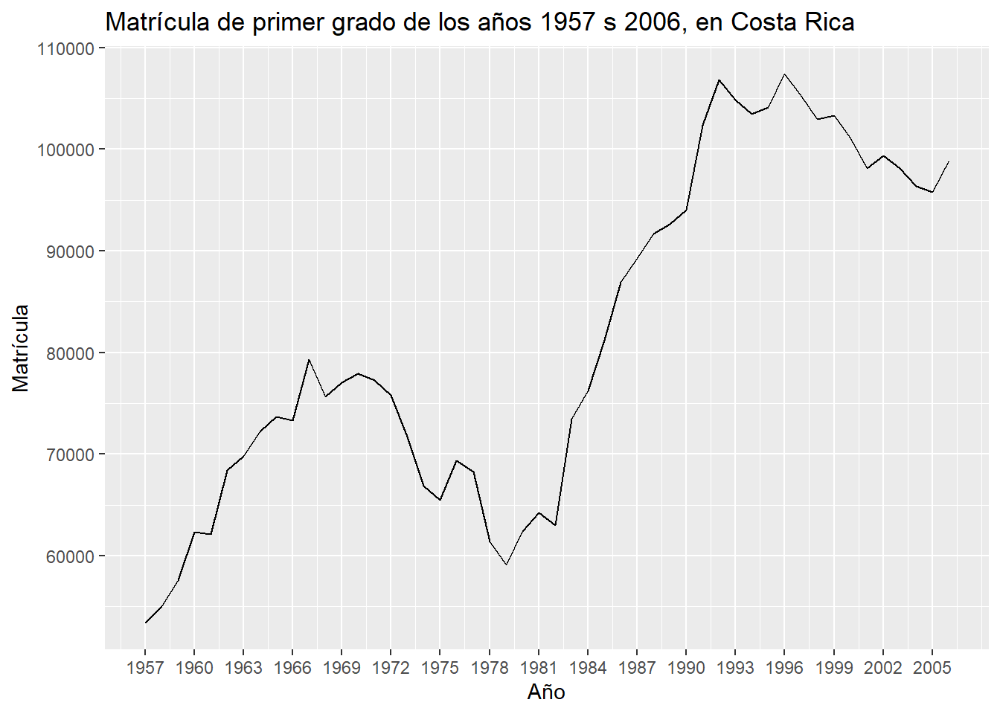
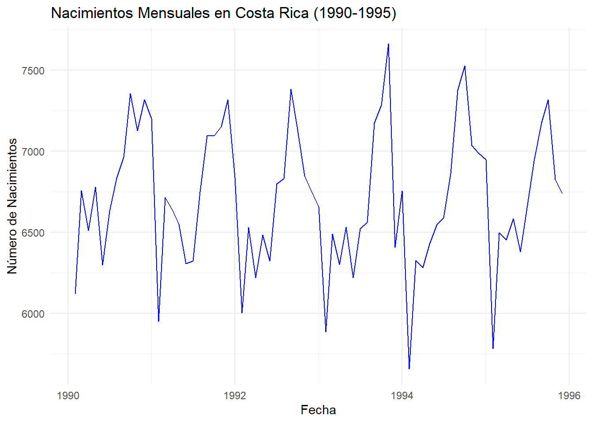
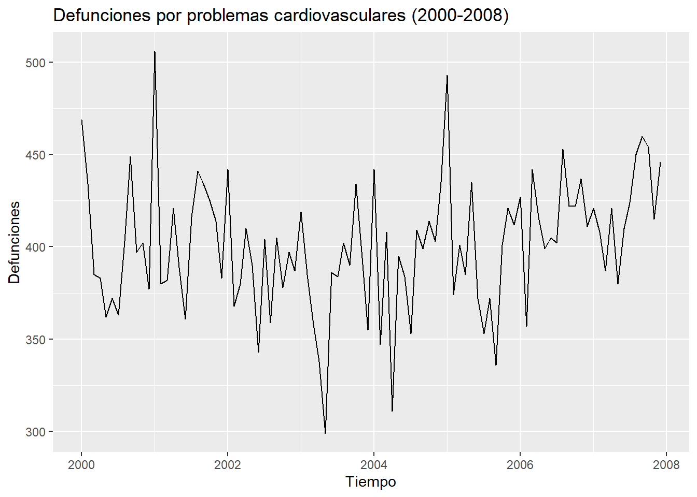
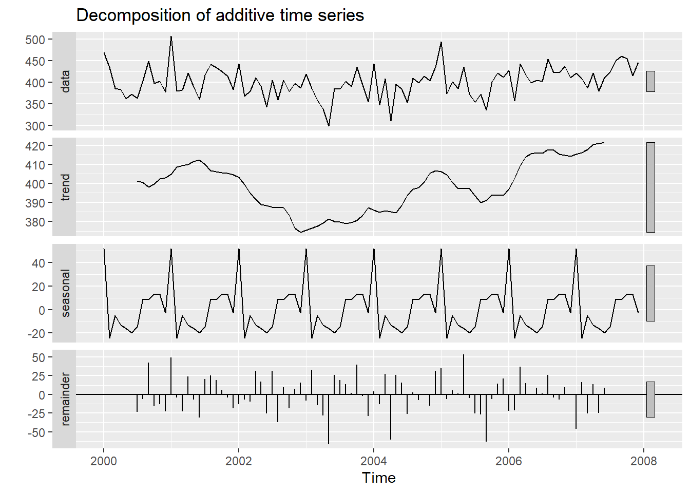
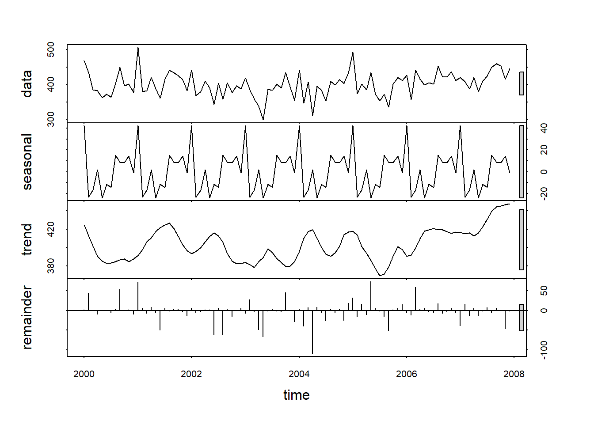
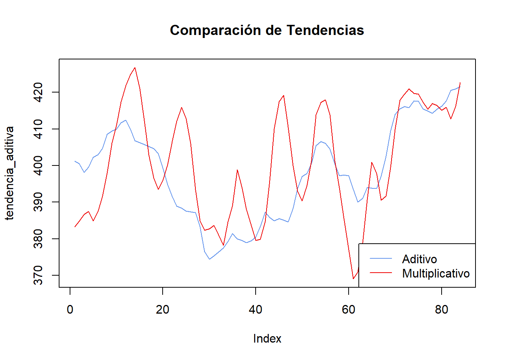
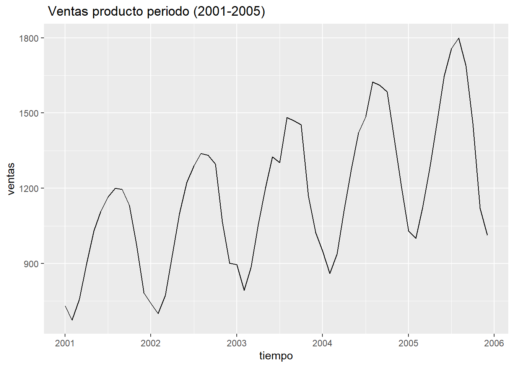
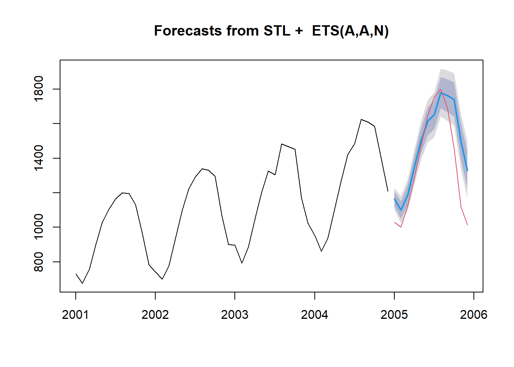

suppressMessages({
mensaje <- capture.output({
library(ggfortify)
library(forecast)
library(fpp2)
library(data.table)
library(TTR)
library(xts)
library(tidyverse)
library(lubridate)
library(quantmod)
library(ggplot2)
})
}) Evaluación 1. Curso Series temporales. Grupo 1.
Pregunta 1:
Clasifique las siguientes series (discreta o continua, univariada o multivariada).
- Índice diario de bolsa de valores durante el período de enero 1990 a diciembre 2010.
- Discreta, univariada
- Registro de la marea en un lugar especíco durante 30 días.
- Continua, univariada
- Presión sanguínea de una mujer durante el embarazo.
- Continua, univariada
- Temperatura promedio diario durante el año 2019.
- Discreta, univariada
- Registro diario de nacimiento y defunciones durante el año 2010.
- Discreta, multivariada
Pregunta 2
En la base de datos matricula.csv se refiere a la matrícula de primer grado de los años 1957 s 2006, en Costa Rica.
Importe los datos a R.
library(readr) matricula <- read_csv("matricula.csv")Rows: 50 Columns: 2 ── Column specification ──────────────────────────────────────────────────────── Delimiter: "," dbl (2): ano, matricula ℹ Use `spec()` to retrieve the full column specification for this data. ℹ Specify the column types or set `show_col_types = FALSE` to quiet this message.head(matricula) #viene por año# A tibble: 6 × 2 ano matricula <dbl> <dbl> 1 1957 53450 2 1958 55048 3 1959 57584 4 1960 62319 5 1961 62094 6 1962 68454Elabore un gráfico de la serie.
class(matricula)[1] "spec_tbl_df" "tbl_df" "tbl" "data.frame"library(ggplot2) plot1 <- ggplot(matricula, aes(x=ano, y=matricula)) + geom_line() + ggtitle("Matrícula de primer grado de los años 1957 s 2006, en Costa Rica") + xlab("Año") + ylab("Matrícula") + scale_x_continuous(breaks = seq(min(matricula$ano), max(matricula$ano), by = 3)) print(plot1)
Comente sobre las características de la serie.
Tendencia General: La matrícula de primer grado muestra una tendencia general a aumentar durante el período de 1957 al 2006. Sin embargo, se observan fluctuaciones.
Fluctuaciones y patrones: En cuanto a las fluctuaciones que se observan, entre las décadas de 1960 y 1970, hay caídas intermitentes. A partir de los años 1979 y 1980, se observa un aumento continuo de la matrícula que se mantiene hasta principios de los años 90 donde alcanza un pico.
Seguidamente se observa cierta estabilización de la matrícula entre los años 90 al 2005 pero con ciertas disminuciones, también se observa un inclemento hacia el final de período (2006).
Pregunta 3
En la base de datos nacimiento.csv se tienen las cifras de los nacimientos mensuales inscritos en Costa Rica de enero de 1990 a diciembre de 1995.
- Importe los datos a R.
nacimientos = read.csv("nacimiento.csv")
colnames(nacimientos) <- c("Fecha", "Nacimientos")
Sys.setlocale("LC_TIME", "C")[1] "C"nacimientos$Fecha <- as.Date(paste("01", nacimientos$Fecha), format = "%d %b-%y")- Elabore un gráfico de la serie.
ggplot(nacimientos, aes(x = Fecha, y = Nacimientos)) +
geom_line(color = "blue") +
labs(title = "Nacimientos Mensuales en Costa Rica (1990-1995)",
x = "Fecha",
y = "Número de Nacimientos") +
theme_minimal()
Comente sobre las características de la serie.
Tendencia General: No se observa una tendencia claramente ascendente o descendente en los nacimientos, sino más bien una repetición de picos y valles a lo largo de los años. No hay un componente de tendencia claro.
Fluctuaciones y patrones: Los datos presentan una estacionalidad marcada con picos recurrentes. Se observan caídas pronunciadas en algunos meses de cada año, seguidas de aumentos consistentes hacia finales del año y principios del siguiente. Además, aunque hay una variación relevante de un mes a otro, la serie no muestra cambios drásticos a largo plazo, lo que sugiere una estabilidad relativa en el número total de nacimientos anuales, lo cual implica que la serie no tiene componente de tendencia.
Pregunta 4
En la base de datos cardiovascular.csv se refiere a las cifras de defunciones por problemas cardiovasculares en Costa Rica en el periodo 2000-2007.
- Importe los datos a R.
cardio <- read.csv("cardiovascular.csv")
cardio.ts <- ts(cardio$y, start = c(2000,1), frequency = 12)- Elabore un gráfico de la serie.
autoplot(cardio.ts) + labs(x= "Tiempo", y= "Defunciones", title = "Defunciones por problemas cardiovasculares (2000-2008)")
- Realice la descomposición clásica aditiva de la serie y comente.
ad.cardio <- decompose(cardio.ts, type = "additive")
autoplot(ad.cardio)
El componente estacional revela una notable estabilidad a lo largo de los años, con patrones mensuales consistentes. Con respecto a la tendencia, se ve una tendencia negativa entre 2000 y 2003, mientras que del 2004 al 2008 se aprecia una tendencia positiva. Se aprecia que el componente de ruido blanco es el de mayor peso en la serie, seguido del componente estacional, siendo la tendencia el componente con mayor efecto sobre la serie.
- Realice la descomposición STL de la serie y compare con el punto anterior.
stl.cardio <- stl(cardio.ts, t.window = 7, s.window = "periodic", robust = T)
plot(stl.cardio)
Al comparar la descomposición aditiva y la descomposición STL las diferencias se observan en la tendencia. En el caso de la descomposición STL de manera general se observa un lento aumento. También se observan periodos donde la tendencia muestra caídas o aumentos. Estás fluctuaciones son más pronunciados que en la descomposición aditiva. Al observar la serie, se prefiere la descomposición aditiva, pues la variación alrededor del componente tendencia-ciclo no varía con el nivel de la serie de tiempo.
B <- cbind(stl.cardio$time.series[,2], ad.cardio$trend)
tendencia_aditiva <- B[7:90, 2]
tendencia_stl <- B[7:90, 1]
plot(tendencia_aditiva, type = 'l', col = 'cornflowerblue', ylim = range(c(tendencia_aditiva, tendencia_stl)), main = "Comparación de Tendencias")
lines(tendencia_stl, col = 'red2')
legend("bottomright", legend = c("Aditivo", "Multiplicativo"), col = c("cornflowerblue", "red2"), lty = 1)
Pregunta 5
En la base de datos ventas.csv se refiere a las ventas mensuales de un producto realizadas por una empresa en el periodo 2001-2005.
Importe los datos a R.
library(readxl) ventas <- read_excel("ventas.xls") y=ventas$y ventas.ts=ts(y,start=c(2001,1),frequency=12) cycle(ventas.ts)Jan Feb Mar Apr May Jun Jul Aug Sep Oct Nov Dec 2001 1 2 3 4 5 6 7 8 9 10 11 12 2002 1 2 3 4 5 6 7 8 9 10 11 12 2003 1 2 3 4 5 6 7 8 9 10 11 12 2004 1 2 3 4 5 6 7 8 9 10 11 12 2005 1 2 3 4 5 6 7 8 9 10 11 12Elabore un gráfico de la serie.
autoplot(ventas.ts) + labs(x ="tiempo", y = "ventas", title=" Ventas producto periodo (2001-2005)")
Realice la descomposición clásica multiplicativa para la serie en el periodo 2001-2004.
y=ventas$y ventas.ts2=ts(y,start=c(2001,1),end = c(2004,12),frequency=12) decompose.ventas <- decompose(ventas.ts2,"multiplicative") autoplot(decompose.ventas)
Pronostique la serie para el año 2005 y calcule las medidas de precisión de estos pronósticos.
- Pronostico de la serie del año 2005
y.train<-window(ventas.ts,start=c(2001,1),end = c(2004,12)) y.test<-window(ventas.ts,start=c(2005,1),end=c(2005,12)) y.stl3<-stl(y.train,t.window=20, s.window="periodic", robust=TRUE) pronostico<-forecast(y.stl3,h=12) plot(pronostico) points(y.test,type="l",col=2)
- Medidas de precisión
accuracy(pronostico)ME RMSE MAE MPE MAPE MASE Training set -1.580039 30.7163 22.62786 -0.2185395 2.034641 0.2126345 ACF1 Training set -0.07676616e=y.train-fitted(pronostico) n=length(e) MAE=sum((abs(e)))/n ECM=sum(e**2)/n RMSE=sqrt(ECM) EP=100*(e/y.train) MAPE=sum(abs(EP))/n cbind(MAE,RMSE,MAPE)MAE RMSE MAPE [1,] 22.62786 30.7163 2.034641